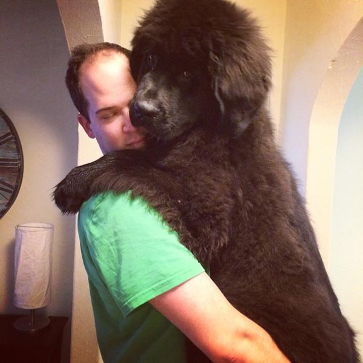

Bridesmaids
Amber AKA "Wam"
Matron of Honor
The world-record holder for number of self-inflicted black eyes, Amber is a workout fanatic and isn’t afraid to demonstrate her deep lunging abilities and bulging biceps. At times lunges may result in slippage of a single fart, but she simply brushes aside any mishaps with a good ol’ shot of whisky and an awkward over accentuation of the middle vowel in a four-letter word. A truly gentle soul, Amber spends her days writing binary code to save California from drought, communicating with the dead, and struggling to ride a bike.
Britt AKA "B-money"
When she isn't dominating the hip-hop world with her incredible rapping skills, Brittney is hustling at the local billiards table to make ends meet. Luckily for her, Brittney was touched by the goddess Aphrodite upon conception and has been using her looks to support the drinking habits of her friends for the past 9 years. Unfortunately for the toilets and the US health care system-clinics, their tolerance never ended up rubbing off on her. Despite this setback, she maintains high aspirations of becoming a wizard and can be seen practicing “office bod” spells on her coworkers.
Jessica AKA "Toots"
As a French Japanese Jew, Toots fills the diversity quota for our friend group and lives by the unselfish motto “whateva yu lik we doo fah you.” She and Jen forged an unbreakable bond over their mutual love of stalking and overpriced black and white clothing. Despite wasting her youth ensuring Jen, Amber, and Brittney survived college, Toots went on to become a world-renowned chef winning the 2009 Iron Chef America Challenge (skills that likely come from her French heritage). But because of her magical Asian genes, she still looks like she’s 21 and her simple syrup brings all the boys to the yard.
Kelli AKA "Come at me bro!"
Putting her religious and psychology degrees to good use, Kelli works in the puritan field of beer as the regional manager of the western USA Miller-Coors Dynasty. Despite her meek and humble persona, Kelli spends her spare time dressing up in capes and claiming to be Thor while she calmly drives through the streets of Colorado complimenting other drivers on their exquisite driving abilities. She and Jen share a love of all things syfy fantasy and can often be seen LARPing together on Sunday afternoons.
Julianna AKA "Booga"

As a professional boxer, Julianna has traveled all over the world "knockin people naked and hiding the clothes". She has a considerable altruistic streak and shows her love through dedicated support of the US economy, even to the detriment of her own finances. At times however, her fear of bridges earns her the “attention light”, something crippling to those who simply love to travel. Yet, she always seems to rise above challenging times by chanting the motto “I had a grat tim win I was. Chicacret I hav las avi macup on my fas”.
Sarah AKA “ayayayayayaya”
A philosophical genus nationally recognized by MENSA, Sarah always reflects upon some of life’s most critical questions such as, ”Can I borrow some of your clothes?“ and ”Can we go dancing ayayayaya!?“. She has quite the quick-wit and has always been one to know exactly what she wants to do and why (the rest of the wedding party can frequently be found leaning on Sarah for guidance). Although plagued by crippling shyness in everyday conversation, Sarah compensates by pretending to be of Latino decent.
Gia AKA “my bestie”

Perhaps the most loved human being on the planet, Gia spends her days bringing joy and happiness to the world. The Bradham-McLeod family would collapse without her daily contributions of cleaning food off the floor and heating laps. Further, she recently started her own pest control company, specializing in squirrels, lizards, and moths. To support this startup as well as her presidential candidacy, please visit: GOFUNDME.org/Gia4President. Due to international speaking obligations discussing the seriousness of Global Climate Change, Gia may or may not be available to attend the nuptials.
Groomsmen
Dave AKA "Captain Bodangs"
Dave's been a crucial partner in crime since 2007 when we both witnessed a man-child with questionable facial hair, stop-drop-and-roll in the mud for no apparent reason. Always one to see the big picture, I owe Dave for being instrumental in convincing me about the economic advantages of riding motorcycles only on one wheel. I want to point out as well that Dave once rode a unicorn, bareback, clear across the country and never spilled a single drop from the open jar of pickles he was delivering at the time; that's just the kind of guy he is. If you're looking for a story for the ages, ask him about his night at the Hillcrest - life's never been the same since!
Juan AKA "White Heat"
After surviving a civil war by riding a Huffy bicycle to safety before he had even turned 12, Juan found himself in the tropical climate of Winnipeg in 1992. It was there that our friendship was forged from the blast furnaces of King's Park mountain bike rides and days spent naming make & model of cars from an elevated tree position. Rarely have I been as proud of Juan as the day he stood up to Mr. Weidman's card game crap and told Perry's restaurant that he wasn't going to take any more of their $6.35 per hour, oven cleaner chemical warfare.
David AKA "Beauty Slump"
The only guy I know who's ridden a CCM with no pedals since he was 12 - roughly the time that marked the first blossoming of our friendship. Together we played in the best band that ever lived and slightly before that, we stood and watched in wonder as I was slapped by an aggressive male while trying to eat a sandwich in Subway; two pivotal moments in history. As much as I love the guy, Dave also ruined my dreams of becoming a pro basketball player when it turned out he was significantly better than me in grade 7.
Moein AKA "Critical Back Machine"
This man once put a nicely dressed hot dog on the street, just to see what drivers would do - a scientist of the highest regard. We became friends when I tried to interview him in 1994 about why Dalhousie school had a rubber gym floor and quickly became business partners in a short-lived food franchise named McMoJo's shortly thereafter. Similar to how Prince became "The Artist", Moein would later change his name to Papillion - a change which persists to this day.
Steve AKA "I Love Spongee"
A giant of a man, even as a 10 year old boy when we met, Steve's love for boat rides on the bayou is matched only by his ability to pull hamburgers out of gas tanks — so, no surprise he's my favorite tall person. Never one to be seen without his feather boa constrictor Dundee hat, he's no stranger to finding missing people face-down on golf greens and saving people with missing shoes from overturned kayaks. Little wonder then, that he enjoys a chicken wing or two while listening to the Bloodhound Gang.
Ryan AKA "Wah-Wah-I'm-Melting"
Known far and wide for his exceptional strength (that only his younger brother could top), this guy's been looking out for me since I showed up on this planet. Ryan once crafted a 3-foot thick titanium chair (no small feat given the difficulty in welding titanium), which was his weapon/finishing move of choice while on the amateur wrestling circuit. When not parking Honda Civics on their side just because he can, Ryan enjoys quiet evenings of world domination and perfecting the iceberg rye and coke.
Tyler AKA "My long board is made with a 2x8"
Becoming friends in the tenth grade while learning the finer points of high caliber sports such as wiffle ball, little did I know that Tyler would one day impress me with the most realistic turkey call ever produced by a non-turkey. In subsequent years, Tyler would unsuccessfully sue the hip hop/rap industry and Justin Timberlake for allegedly stealing his preemptive fashion trademarks of furry-hooded winter jackets and trucker hats respectively. Tyler gave up a promising career in dot matrix printer reselling by the time he was 19 - a high-water mark many of us still aspire to.
Jordan AKA "Don't put the wifi router under my bed"
Often regarded as a man of reckless abandon, he once requested his roommates dust the living room light switches to save humanity from oblivion and becoming part-couches. Fortunately, the request worked, and here we are....so you can all thank him when you see him next. For the record, Jordan and I were united by the Nike Air Pegasus shoe of 1992, a shoe of incredible integrity and the pinnacle of design to this day. As we look to the future, one can only imagine where another 25 years of Chrysler innovation will take the two of us and our friendship.
Brent AKA "You're done here"
Best Man
When not doling out fists of justice to the local bike commuters in his way, Brent inspires us all by focusing his time on swimming laps at pools to make friends stay longer at parties and making sure people don't take up more than one seat on the bus. A shy man by all accounts, we became friends in 2005 while contemplating the phenomenal physics involved when a man with hedge-hog hair stands in the presence of a gas turbine engine intake. Never one to be afraid of taking a coffee break at work, he still works tirelessly to this day, building his body into that of a young Justin Bieber.